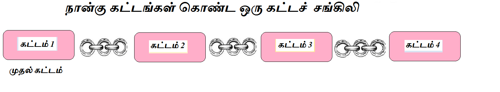
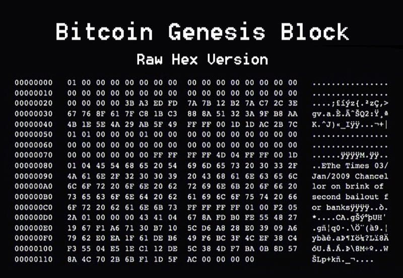
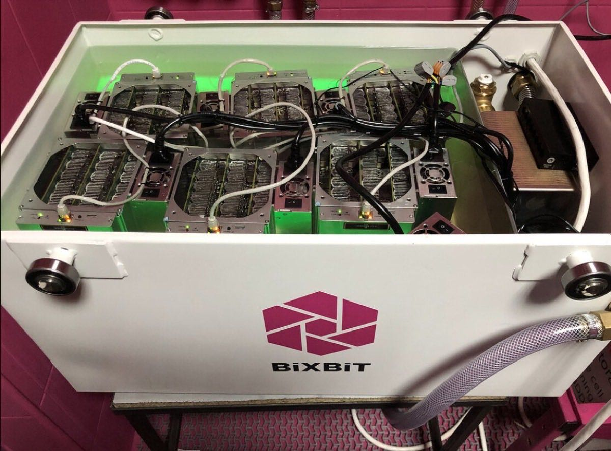
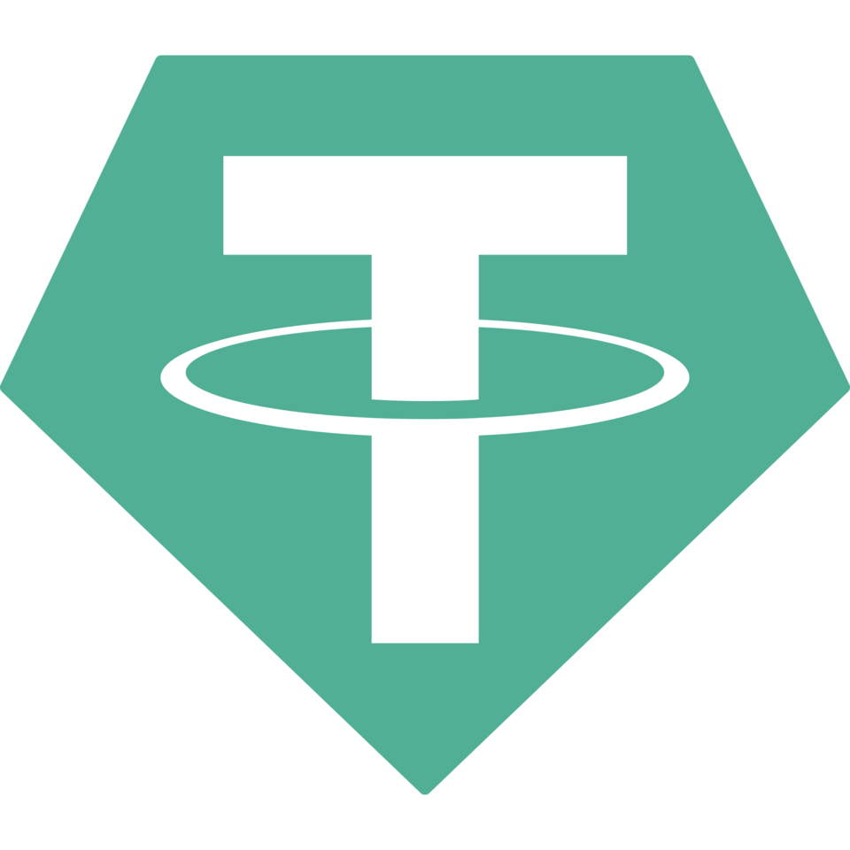
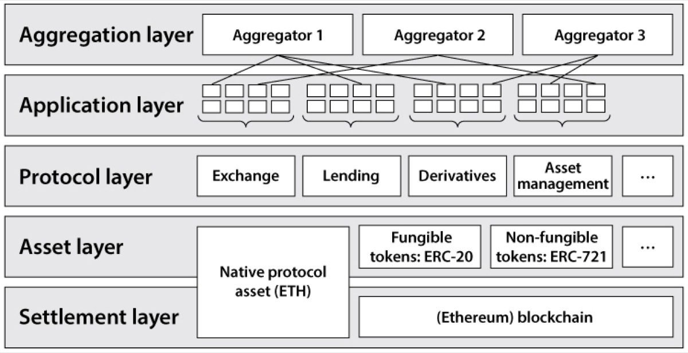
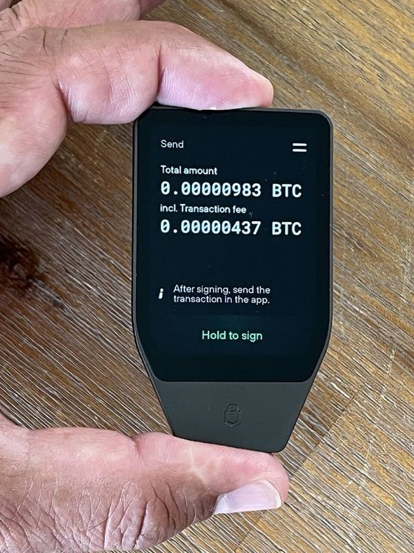

Alice 和 Bob 是同校学生。Alice 欠 Bob 100 元饭钱，她想直接通过手机转过去，不经过微信、不经过支付宝、也不经过银行 App。这个看似简单的动作，拆开后会引出数字货币最基础的问题：在没有银行参与的情况下，怎么让一群互不信任的人共同承认一份余额记录？
这本书从这个问题出发，用八章的篇幅走完从密码学工具到比特币网络、从以太坊智能合约到共识机制、从稳定币和 DeFi 到中国监管与安全实战的完整路线。全书涉及法规和技术细节的数字，核实时点均为 2026 年 7 月，之后必然变化——变的是数字，不变的是机制。
信任与密码学
1.1 银行做了什么：清算、账本、信任
在讨论"去掉银行"之前，先仔细看看银行到底做了什么。银行最核心的资产是一份账本（ledger）——数据库里的一系列记录：每个人的账户余额、每一笔收入和支出。账本的关键特征是：银行保存着唯一被认可的版本。
当用手机银行给 Bob 转 100 元时，银行会做清算（settlement）：检查余额是否足够、扣款、入账、记录交易的时间和金额。这个过程中，银行实际上回答了三个问题：这笔钱存在吗？这笔钱属于付款人吗？这笔钱之前有没有被花掉？
之所以敢把钱放在银行，并不是因为银行用了什么神奇的密码学，而是因为信任一整套制度：法律、存款保险、监管、客服和司法救济。数字货币不是要消灭所有信任，而是在某些场景下，把"必须信任某一家机构"变成"可以依据公开规则自行核查"。
1.2 没有银行时的问题：谁记账、双花、女巫攻击
把银行拿掉后，三个核心困难立刻出现。
1.3 比特币的全景答案
比特币给出的方案可以压缩成一段话：Alice 用自己的私钥对交易做数字签名，把交易发给比特币网络。网络中的全节点分别检查交易是否合法。矿工从有效交易中组织候选区块，并通过工作量证明竞争记账机会。某个候选区块胜出后，全节点再次独立检查它；符合规则的区块被接到当前账本后面。
用户负责授权，节点负责检查，矿工负责排序和竞争，公开规则负责统一标准。这四件事分别对应四类参与者。
1.4 四类参与者
比特币网络中有四类角色。同一台电脑可以同时承担多个角色，但职责要分开理解。
- 生成并保管私钥、公钥和地址
- 组织交易，填写收款地址和金额
- 用私钥对交易做数字签名
- 把签名后的交易广播到网络
- 保存完整的账本副本
- 检查每笔交易：签名、资金来源、金额平衡
- 检查每个区块：PoW、矿工奖励、交易集合
- 只把合法内容加入账本，转发给邻居
- 从内存池收集待处理交易
- 组织候选区块
- 大量哈希计算寻找合格区块头
- 找到后广播，希望全节点接受
- 集中大量矿机算力
- 统一分配任务、共享收益
- 提高中小矿工收入稳定性
- 引入新信任问题：矿池管理者选择交易
1.5 哈希函数：数字指纹
哈希函数（hash function）接收任意长度的数据，输出固定长度的结果。可以把它想象成一台"数字指纹机"：把任何文件放进去，都会得到一个长度固定的指纹字符串；文件只要改一个字，指纹通常会完全不同。比特币大量使用 SHA-256 哈希算法。
哈希有几个重要性质：确定性（同样输入同样输出）、敏感性（微小变化导致大范围输出变化）、单向性（从哈希值倒推原文极其困难）、抗碰撞性（很难找到两个不同输入产生相同输出）。哈希和加密的区别：加密是"可逆的隐藏"，哈希是"不可逆的指纹"。
在比特币里，哈希承担几项工作：交易标识（唯一交易 ID）、区块标识、Merkle 根（交易汇总）、工作量证明（矿工反复计算）、链式连接（每个区块包含前一个的哈希）。哈希让"数据是否被改动"变成一件可以快速核查的事。
1.6 私钥、公钥、地址
Alice 的钱包第一次使用时，会生成一个足够随机的巨大整数作为私钥。比特币私钥是一个 256 位随机数，可能的取值比宇宙中所有原子数量还多。掌握私钥的人可以授权花费相应资金。
钱包通过椭圆曲线运算，从私钥推导出公钥。正向计算高效，反向从公钥推私钥在现实算力下不可行。公钥经过处理后生成地址——收款用的"门牌号"。
现代钱包通常为不同收款生成不同地址。反复使用同一地址会让别人把多笔交易关联起来。
1.7 数字签名：授权与完整性
有了私钥和公钥，Alice 就可以对一笔交易做数字签名。签名同时完成两件事：授权证明（证明交易由私钥持有者发起）和完整性证明（证明交易内容在签名后未被改动）。节点用 Alice 的公钥验证签名。
签名不隐藏交易内容——金额、输入和输出仍可被网络读取。签名能证明"某个私钥授权了这笔交易"，但不能证明屏幕前操作的人一定是现实中的 Alice、商品真实交付、或 Alice 不是被胁迫签名的。私钥一旦被盗，攻击者也能生成有效签名。
1.8 Alice 如何签署一笔交易
假设 Alice 的钱包显示有 0.5 BTC。比特币账本并没有保存一行"Alice 余额：0.5 BTC"，而是保存着一份尚未被花费的交易输出，简称 UTXO。可以把 UTXO 理解成一张面额为 0.5 BTC、带有特定开锁条件的数字钞票。
Alice 想给 Bob 支付 0.3 BTC。钱包创建一笔新交易：
很像用现金买东西：拿出一张 50 元钞票买 30 元的咖啡，店员找给 20 元。在比特币里，输入 0.5 BTC 必须全部花掉。
钱包随后对交易生成签名，收款条件和全部输出金额都受到保护。如果有人把 Bob 的 0.3 BTC 改成自己的地址，原签名将无法通过验证。交易通过检查后进入节点的内存池（mempool），并继续传给邻居节点。
1.9 Merkle 树：把交易压成指纹
一个区块可能包含大量交易。全节点需要一个简洁方法，证明区块中的交易集合没有被悄悄修改。Merkle 树把每笔交易的哈希两两组合并继续哈希，最终得到一个根哈希。任何一笔交易发生变化，根哈希也会变。区块头只需保存这个根哈希，就能为整批交易提供统一指纹。
Merkle 树还可以提供简短的成员证明：想证明某笔交易位于区块中，不必传输全部交易，只需给出通向根节点的少量相邻哈希。轻量钱包会利用这类证明减少数据需求。
1.10 密码学的边界
数字签名可以检查授权与完整性，哈希可以检查数据变化。但这些保证都有明确边界：不能阻止主动把私钥交给诈骗者、不能自动修复钱包软件漏洞、不能判断链外商品是否真实交付、不能替代现实中的法律责任。
- 银行扮演账本保管者、交易执行者、纠纷仲裁者三个角色。数字货币在某些场景下把"必须信任机构"变成"可以依据公开规则自行核查"。
- 没有银行时的三个核心困难：谁记账（没有单一可信账本）、双花（数字文件可复制）、女巫攻击（网络身份廉价）。
- 比特币的全景答案：用户签名授权 → 全节点检查 → 矿工 PoW 竞争 → 全节点验收 → 区块接入账本。
- 三种密码学工具：哈希函数（单向指纹）、私钥/公钥/地址（单向推导链）、数字签名（授权 + 完整性）。
- UTXO 模型：输入必须全部花掉，差额找零回自己地址，剩余给矿工。签名只证明授权，不能单独解决双花。
比特币的设计
2.1 2008 年金融危机与中本聪的邮件
2008 年 9 月 15 日，美国第四大投资银行雷曼兄弟申请破产保护。房贷泡沫破裂、信用评级失灵、银行间互相不再信任。这场危机暴露了一个被长期默认的前提：把钱交给银行，是因为相信银行不会出错。
2008 年 10 月 31 日，一个化名中本聪的人在密码学邮件列表里贴出一篇只有九页的论文：《Bitcoin: A Peer-to-Peer Electronic Cash System》。论文开头就点明了目标：一种纯粹的点对点电子现金版本，将允许在线支付直接从一方发送到另一方，而无需通过金融机构。
中本聪提出的核心问题并不大却很刁钻：Alice 和 Bob 互不认识，Alice 怎样在互联网上直接把一笔数字货币付给 Bob，同时让全世界都承认这笔钱的归属已经转移？难点不是伪造签名——数字签名能证明授权——而是同一份数字资产可以被复制，Alice 完全可能同时授权两笔付款。这就是双重支付（Double Spending）问题。
2.2 交易 → 区块 → 链
比特币把日志拆成三层：交易记录资金流转，区块把交易按批打包，链通过哈希把区块串起来让历史难以被事后篡改。工作量证明决定谁能给链增加下一个区块，用计算成本替代"管理员批准"。
Alice 的交易进入当前账本中的区块后，获得第一次确认。后续每增加一个区块，改写这段历史所需追赶的工作量就更多。
2.3 UTXO：不是余额，而是"数字钞票"
比特币使用 UTXO 模型。UTXO 全称"未花费交易输出"（Unspent Transaction Output）。直觉上，可以把 UTXO 理解成一张张不同面额的数字钞票。付款时，必须完整消耗某一张或几张"钞票"，然后创建新的"钞票"作为输出。
假设 Alice 控制着一个 0.5 BTC 的 UTXO，想付给 Bob 0.3 BTC，并支付 0.001 BTC 手续费。钱包构造的交易：输入 0.500 BTC → 输出 0.300 BTC 给 Bob + 0.199 BTC 找零给 Alice + 0.001 BTC 差额给矿工。原来的 0.5 BTC 输出被完整花费掉，不再属于任何人。
2.4 区块头和区块体
一个区块分成两部分。区块体保存交易列表，第一笔固定是 Coinbase 交易（矿工申领奖励），后面才是普通用户交易。区块头只有 80 字节，保存六项关键信息：
| 字段 | 内容 |
|---|---|
| Version | 协议与规则版本信息 |
| Previous Block Hash | 父区块的哈希 |
| Merkle Root | 本区块全部交易的总指纹 |
| Timestamp | 矿工填写的时间 |
| Bits | 当前难度目标的压缩表示 |
| Nonce | 挖矿时反复改变的 32 位数字 |
区块头设计得非常小，是为了让工作量证明只反复哈希 80 字节，而不是每次把整个区块体都哈希一遍。这个细节让专用矿机可以把算力推到极高。
2.5 链：用哈希把区块串起来
每个候选区块都写入父区块的哈希。新区块通过验证后，就像接在父区块后面的一节链条。如果攻击者修改旧区块中的交易，该区块的 Merkle Root 和哈希都会改变，后续区块保存的父哈希随即对不上，工作量证明也需要重新完成。与此同时，诚实矿工会继续扩展公开的有效链。攻击者追赶历史时，既要重做旧工作，也要面对新工作不断增加。

节点选择链时，先排除违反协议规则的区块，再在有效分支中选择累计工作量最大的一条。
2.6 难度与工作量证明
比特币要求区块头的双重 SHA-256 哈希小于当前目标值（Target）。Target 越小，符合条件的结果越少，挖矿难度越高。矿工反复改变区块头里的 Nonce 字段并重新计算哈希。每次哈希互相独立，失败一亿次并不会积累"完成进度"。
Nonce 只有 32 位，高速矿机很快就能遍历完。于是矿工改变 Coinbase 里的 extraNonce、时间戳等字段，生成新的 Merkle Root 和区块头，再继续搜索。
比特币每 2016 个区块调整一次目标值（约两周）。核心关系：新 Target = 旧 Target × (实际耗时 / 预期耗时)。实际耗时较短则变难，较长则变易。协议限制单次调整幅度。
2.7 创世区块与减半
2009 年 1 月 3 日，比特币创世区块产生。中本聪在 Coinbase 交易里留下了一句话："The Times 03/Jan/2009 Chancellor on brink of second bailout for banks."——引用当天《泰晤士报》头条，既是时间戳证明，也带着对银行救助的讽刺。

创世
每个区块补贴 50 BTC
第一次减半
补贴降至 25 BTC
第二次减半
补贴降至 12.5 BTC
第三次减半
补贴降至 6.25 BTC
第四次减半
补贴降至 3.125 BTC（区块高度 840,000）
比特币最初每个区块补贴 50 BTC，此后每 21 万个区块减半一次。补贴按几何级数下降，总发行量逐步接近 2100 万 BTC。减半解决的核心问题是：把比特币的总供给写入协议，让节点可以独立验证每个高度允许发行多少。
- 中本聪 2008 年白皮书回答的核心问题：互不认识的人如何在互联网上直接转移数字资产，同时防止双重支付。
- 比特币三层结构：交易（资金流转）→ 区块（交易打包）→ 链（哈希串联，防篡改）。
- UTXO 模型：输入必须完整消耗，输出创建新"钞票"，差额给矿工。余额通过公开记录重新计算。
- 区块头 80 字节，包含父区块哈希、Merkle Root、Nonce 等六项。工作量证明要求双重 SHA-256 小于 Target。
- 每 2016 个区块调整难度，维持约 10 分钟平均出块。区块补贴每 21 万区块减半，当前 3.125 BTC。
比特币网络
3.1 一笔交易发出后发生了什么
周五晚上，Alice 在宿舍用比特币向 Bob 转 0.3 BTC。她在钱包里输入 Bob 的地址和金额，点击"发送"。几秒钟后，Bob 的手机弹出通知："收到一笔待确认付款"。十分钟后，Bob 说："已经 1 次确认了。"这中间到底发生了什么？
比特币没有中央银行，也没有唯一的"官方服务器"。Alice 的付款指令发出后，要在全世界成千上万台互不隶属的计算机之间传播、排队、竞争、被验证，最后才写进一份大家共同认可的公共账本。
3.2 内存池与交易传播
Alice 的钱包只连接了几个全节点，把签好名的交易发过去。收到交易的第一个节点会立刻做独立检查：格式对不对？输入引用的 UTXO 还存在吗？签名能通过验证吗？输入总额够覆盖输出总额吗？检查通过后，交易进入该节点的内存池（Mempool）——每个节点本地保存的"待确认交易池"。
进入内存池的交易会被继续转发给相邻节点。每个节点都记得自己见过哪些交易 ID，避免重复广播。这种"我把消息告诉邻居，邻居再告诉邻居"的方式叫做 Gossip 协议（八卦式传播）。几秒钟之内，大量节点和矿工都会看到 Alice 的交易。
3.3 矿工如何组织候选区块
矿工从本地内存池里挑选交易，优先选择手续费率高的。不同矿工的内存池和选择策略不同，候选区块内容也经常不同。矿工在交易列表最前面放上一笔 Coinbase 交易，直接申领本区块奖励（当前区块补贴 + 全部普通交易手续费之和）。截至 2026 年 7 月，区块补贴为 3.125 BTC。
然后矿工把 Coinbase 交易和普通交易按顺序排列，计算 Merkle Root，填写 80 字节的区块头。至此，一个候选区块准备好了——但它还没有合格的工作量证明。
3.4 工作量证明：一场哈希抽签
比特币要求：对候选区块头计算两次 SHA-256，结果必须小于当前目标值。矿工反复改变 Nonce 字段并重新计算哈希。每次哈希都是一次独立抽签——前一亿次失败不会给下一次带来任何"进度加成"。算力的本质就是每秒能抽签多少次。
从 CPU、GPU 到专用集成电路 ASIC，比特币挖矿硬件已经高度专业化。单台矿机占全网算力比例极小，于是出现了矿池：矿池服务器负责选择交易、生成区块模板；大量矿机拿到模板后高速尝试哈希；找到合格结果后，收益按内部规则分配。

3.5 区块确认与 6 次确认
找到合格 PoW 的矿工把完整区块广播出去，全节点逐项验收。通过全部检查后，区块进入节点维护的区块树。Alice 的交易一旦被包含在这个区块里，就获得 1 次确认。每增加一个后续区块，确认数加 1。
确认数表示交易在当前链中的深度。攻击者若想改写交易，必须从更早的位置建立另一条有效分支，并且累计工作量超过当前链。后续区块越多，攻击者需要重做的工作就越多。"等待 6 次确认"是比特币社区常见的经验值，不是协议强制要求。
3.6 全节点、轻节点与 SPV
全节点保存并检查比特币账本，独立验证从区块到交易的全部规则，维护当前 UTXO 集合。运行全节点的最大意义在于：不必信任任何第三方，可以直接依照协议规则判断收款和链状态。
手机等资源有限的设备通常运行轻节点，主要通过区块头和 Merkle 证明来确认与自己相关的交易。SPV（简单支付验证）不需要下载完整区块，只需一条从交易通向 Merkle Root 的哈希路径。但安全模型更依赖连接方式和提供数据的节点。
3.7 分叉与最长链规则
假设矿工 A 和矿工 B 几乎同时找到了下一个区块的合格 PoW。网络暂时出现两个分支。矿工通常在自己看到的累计工作量最大的分支上继续工作。如果下一个区块 C 先接在 A 块后面，A 分支的累计工作量更大，B 块变成陈旧块（Stale Block）。
分叉机制也解释了双花攻击：攻击者可以在秘密分支里构造冲突交易的私有链，等它积累的累计工作量超过公开链后再发布。但即使攻击者掌握全网一半以上算力，也只能做重组、延迟或双花自己已能支配的币——不能伪造别人的签名，不能超发货币，全节点依然会按规则拒绝非法交易。
- 交易从钱包签名后进入相邻节点的内存池，通过 Gossip 协议传播到整个网络。
- 矿工从内存池选择交易，创建 Coinbase 交易申领奖励，组装候选区块，计算 Merkle Root，反复改变 Nonce 寻找合格 PoW。
- 全节点逐项验收新区块，选择累计工作量最大的有效链。交易获得 1 次确认后，后续每增加一个区块确认数加 1。
- 每 2016 个区块调整难度目标，维持约 10 分钟平均出块。当前补贴 3.125 BTC，下一次减半预计约 2028 年。
- 分叉由"累计工作量最大"规则自动解决。全节点独立执行全部规则，轻节点通过 SPV 做简化验证。
以太坊与智能合约
4.1 比特币脚本不够用时，Vitalik 看到了什么
2013 年，还在给比特币杂志写稿的 Vitalik Buterin 注意到：比特币的脚本精巧又安全，却像一把只能开锁的螺丝刀——它能规定"这笔钱谁能花"，却很难表达"如果众筹目标没达到，就把钱退回去"。比特币脚本的设计哲学是刻意限制：只处理签名验证、时间锁、多签等简单逻辑。代价是，任何稍微复杂的规则都得在链外实现。
Vitalik 想：如果区块链不仅能记录"谁转给谁多少钱"，还能保存一段程序，并且让全网节点都按同一段程序执行，会怎么样？这个想法直接催生了以太坊。以太坊解决的核心问题是：怎样让区块链从"转账账本"升级成"公开可验证的通用计算平台"。
4.2 账户模型 vs UTXO
比特币用 UTXO 模型：Alice 的余额不是一行数字，而是一堆"还没花出去的输出"，每张像固定面额的数字钞票。以太坊采用账户模型：每个地址对应一条账户记录，里面直接保存余额、交易序号和其他数据。当 Alice 给 Bob 转账 0.9 ETH 时，链上的状态变化非常直接——Alice 余额从 2.0 变成 1.1，Bob 从 1.0 变成 1.9。
- 像现金钱包，付款要找零
- 余额通过公开记录重新计算
- 每张"钞票"只能花一次
- 天然防止双重支付
- 像银行账户，余额直接扣
- 余额直接保存在账户记录中
- 合约能长期保存复杂数据
- nonce 防止交易重放或乱序
4.3 以太坊交易与 Gas
Alice 打开网页钱包，点击"计数加一"。从这一秒到计数器从 7 变成 8，背后会发生一连串事情：钱包构造交易并签名 → 交易进入交易池（mempool）→ 区块提议者选择交易 → EVM 执行合约 → 其他节点独立复核 → 结果写入新的世界状态。
Gas 是衡量链上计算资源消耗的统一单位。一次简单转账消耗的 Gas 较少；写入合约存储、创建合约或执行复杂逻辑会消耗更多。Gas 还设置了明确边界：如果循环太久或操作太多，执行会耗尽 Gas 并停止，避免某个程序把网络拖垮。
每单位 Gas 的价格主要分成两部分：Base Fee（基础费，由协议根据拥堵程度自动调整，会被销毁）和 Priority Fee（优先费，用户额外付给区块提议者的小费）。失败交易也要付费——节点已经完成的签名检查和指令执行仍然占用资源。
Gwei 是 ETH 的较小单位，1 Gwei = 10⁻⁹ ETH。钱包还会设置 Gas Limit 作为安全边界——超过则失败，但只按实际用量收费。
4.4 智能合约：从自动售货机开始
"智能合约"在以太坊里的实际形态更像一台自动售货机：投入足够金额并选择商品，机器就按照固定规则出货。代码部署后，所有人都能看到它的逻辑；调用时，网络会按代码执行，而不是按某个运营人员的心情执行。
用户日常接触的去中心化应用（DApp）通常由三层组成：网页层（展示界面和组织操作）、钱包层（用私钥签名交易）、合约层（链上的规则与状态）。真正改变资产状态的步骤发生在钱包签名和合约执行之后。
EVM 只能稳定处理所有节点都能复现的数据。天气、汇率、比赛结果来自链外，合约无法自行访问网页或 API。预言机（Oracle）解决的是"怎样把链外可信数据送上链"的问题：多个数据提供者提交报价，预言机网络聚合后更新链上价格。
4.5 Solidity 示例：一个可运行的计数器
下面的合约保留一个数字，允许任何人加一，同时只允许部署者把数字归零。它包含理解智能合约所需的主要元素：状态变量（长期保存在链上）、构造函数（部署时执行一次）、msg.sender（当前调用发起者）、require（条件检查，不满足时回滚）、event（在交易收据中写入日志）。
从源代码到一次成功调用的完整链路：网页组织操作 → 钱包展示并签名 → 合约执行规则 → 收据记录结果 → 网页刷新状态。智能合约还可以在一笔交易中连续调用其他合约，中途失败时所有状态修改一起回滚——这种性质叫作原子性。
4.6 ERC-20 与授权风险
以太坊上的代币通常是一份合约状态。ERC-20 是一种通用代币标准，规定了合约应该提供哪些函数和事件。ETH 本身是协议层的原生资产；ERC-20 代币的余额由各自合约管理。
当 Alice 想在去中心化交易所兑换代币时，交易所合约不能直接从 Alice 钱包拿钱，必须先让 Alice 调用 approve 函数进行授权。授权成功后，交易所合约可以在额度范围内调用 transferFrom 转出代币。
4.7 真实漏洞：The DAO 与重入攻击
2016 年，The DAO 是以太坊上一个去中心化风险投资基金。一名攻击者利用合约漏洞，把基金里的 ETH 大量转走，最终导致以太坊第一次硬分叉，也催生了 ETC 与 ETH 两条链。
漏洞的核心是重入攻击：金库合约先发送 ETH 给用户，最后才扣减余额。接收 ETH 的地址可以是一份合约，它收到 ETH 时立刻再次调用提款函数，此时旧余额尚未扣减，第二次检查仍可通过。更稳妥的顺序是检查—更新—交互：先扣减余额，最后发送 ETH。
- 以太坊在比特币基础上增加智能合约：链上保存程序和数据，全网节点共同执行同一段代码。
- 账户模型让余额和 nonce 直接挂在地址下，与 UTXO 的"数字钞票"思路形成对照。
- Gas 衡量链上计算成本。Base Fee 动态调节拥堵并被销毁，Priority Fee 激励优先打包。失败交易也收费。
- ERC-20 授权把 spender 和额度长期写入合约，网页关闭后权限依然存在——最常见的被盗路径之一。
- The DAO 事件展示重入攻击的破坏力：先更新状态、再与外部交互，是合约设计的重要纪律。
共识机制
5.1 为什么 PoW 耗电
某个夏天的晚上，宿舍楼跳闸了。走廊尽头那间宿舍插了四台"矿机"——机箱轰鸣，显卡发烫，电费账单比房租还厚。那台机器正在做的工作，翻译成一句话就是：反复尝试一个数字，让区块头的哈希值小于某个目标。
工作量证明（PoW）想解决的问题很直接：在开放网络里，下一批交易该由谁来打包？PoW 的回答是：想获得提议权，先付出真实的计算成本和电力成本。创建一个身份免费，但获得"抽签次数"需要矿机和电费，这让"一人多号"无法改变游戏规则。
但全球矿工全年消耗的电力相当于一个中等国家的用电量。有没有办法用另一种"稀缺资源"替代电力？权益证明（PoS）把抵押品从"电费+矿机"换成了"锁定在链上的资产+违规即罚没"。以太坊在 2022 年完成 The Merge，正是从 PoW 切换到了 PoS。
5.2 共识问题：开放网络如何达成一致
共识机制是一套让互不信任的节点对"交易顺序和共同历史"收敛到同一版本的规则。它要处理三类现实麻烦：消息到达顺序不同、节点会掉线、有人故意作恶（双花）。在去中心化系统里，共识机制必须同时完成两件事：选出下一个区块的提议者；让其他节点能够独立验证并在多条分支里选出共同认可的那一条。
5.3 PoW 的直觉与代价
比特币矿工的工作是一个循环：拿到当前链头 → 选一批交易组成候选区块 → 不断改 Nonce 算哈希 → 谁先找到合格哈希就广播新区块。每次哈希都是独立抽奖，拥有全网 10% 算力的矿工长期来看大约能找到 10% 的区块。
PoW 的安全不是来自"算题难"，而是来自重做历史很贵。攻击者想把已确认的交易回滚，必须从那个区块开始重新计算一条工作量更大的链。节点先排除违规区块，再选择累计工作量最大的有效链。
PoW 的代价：为了让"攻击历史"变得昂贵，诚实网络必须持续消耗真实的电力和硬件。偶尔出现两名矿工几乎同时找到合格区块时，网络短暂分叉，随后由累计工作量自动解决。
5.4 PoS 的直觉：押金 + 惩罚
PoW 用电力当抵押品，PoS 换了一种思路：用锁定的资产当抵押品，用惩罚规则防止作弊。要参与共识，先往协议里锁定一定数量的 ETH 作为质押（Stake）。诚实履行职责获得奖励；作恶或严重失职，协议会扣掉部分甚至全部押金——罚没（Slashing）。
以太坊 PoS 把时间切成约 12 秒一个的时隙（Slot）。协议为每个 Slot 指定一名区块提议者，并把一部分验证者分配到委员会。32 个 Slot 组成一个纪元（Epoch），约 6.4 分钟。
当某个检查点获得至少三分之二总质押权重的支持时，它先成为"已证明"；后继检查点再次获得足够支持后，它就成为"已最终确定"。回滚一个已最终确定的检查点，攻击者必须让大量验证者面临罚没。
5.5 以太坊 The Merge
以太坊 2015 年上线时采用 PoW。2022 年 9 月完成 The Merge（合并）：执行层继续处理交易和运行 EVM，共识层（信标链）负责 PoS 的提议、投票和最终性。以太坊基金会当时估算，协议相关能耗下降约 99.95%。Gas 机制保留——Gas 衡量执行和存储资源，由执行层负责，与 PoW 还是 PoS 没有直接关系。
5.6 Pectra 升级与验证者经济学
以太坊 Pectra 升级于 2025 年 5 月 7 日激活。最受关注的改动是 EIP-7251：把单个验证者的最大有效余额从 32 ETH 提高到 2048 ETH。但最低激活余额仍然是 32 ETH——进入门槛没有降低，只是允许已在集合里的验证者合并质押。
| 维度 | PoW（比特币） | PoS（以太坊） |
|---|---|---|
| 争取提议权 | 矿工竞争计算哈希 | 协议按随机性安排提议者 |
| 主要稀缺资源 | 矿机、电力和算力 | 锁定并承担风险的 ETH |
| 分支选择 | 累计工作量最大的有效链 | 证明票的质押权重（LMD-GHOST） |
| 作恶代价 | 浪费电力、失去奖励 | 质押被 Slashing、强制退出 |
| 最终稳定 | 后续区块叠加工作量 | 检查点获三分之二质押支持 |
| 能源消耗 | 高 | 低 |
| 集中化风险 | 大型矿场、矿池 | 大型质押服务 |
5.7 共识的边界
共识机制能解决"共同历史"问题，但不能解决所有问题。Nothing-at-stake：在朴素 PoS 里，验证者对多个分叉都投票没有损失。以太坊用 Slashing 应对——"两边下注"不再免费。长程攻击：攻击者掌握很久以前的验证者私钥，从旧检查点构造长链。以太坊采用弱主观性缓解——新节点使用近期可信检查点开始同步。MEV（最大可提取价值）：区块提议者通过控制交易顺序获得的额外收益。提议者-构建者分离（PBS）是常见缓解方向。
- PoW 用电力和硬件成本让攻击历史变得昂贵。PoS 用锁定的 ETH 和罚没规则替代电力。
- 以太坊 The Merge 在保留执行层状态的前提下切换共识，能耗下降约 99.95%。
- Pectra 升级（2025-05-07）把最大有效余额从 32 ETH 提高到 2048 ETH，但最低激活余额仍为 32 ETH。
- 共识边界：能惩罚仍在系统中的作恶者，需要弱主观性抵御长程攻击，无法消除 MEV 的排序权力影响。
加密货币生态
6.1 为什么需要稳定币
比特币可以在一天之内涨跌 10%。对投机者来说是机会；对真正想用加密货币付款、借贷或结算的人来说，这是噩梦。稳定币试图解决这个问题：它锚定法币（最常见是美元），让一枚代币尽量等于一美元。
目前主流稳定币大致分三类：
发行商在银行里存着美元或短期国债，链上每发行一枚稳定币，背后就有一美元储备。赌的是发行商有没有真钱。
用户把 ETH 等波动资产锁进智能合约，按低于抵押品价值的比例生成稳定币。赌的是抵押品会不会暴跌。
不依赖外部抵押，通过一套规则和两个代币之间的兑换关系维持价格。赌的是市场愿不愿意一直接盘。
6.2 USDT 与 USDC：谁发行了链上的美元
USDT 由 Tether 公司发行，USDC 由 Circle 公司发行。它们都是法币抵押型稳定币，但储备构成、披露方式和合规路径并不相同。一次大额发行大致是这样发生的：机构汇款到发行商银行账户 → 链上铸造相应数量代币 → 发送到机构链上地址。银行体系里多了储备，区块链上多了代币。
这套系统包含两个市场：一级市场连接发行商和合格客户，负责铸造与赎回；二级市场连接普通买家和卖家，价格由交易所订单和链上资金池共同形成。
同一个 USDT 为什么会出现在多条网络？USDT 可以按照不同区块网络的规则存在。Ethereum、Tron、Solana 等网络各自维护账本。钱包里都显示“USDT”，背后的记录可能位于完全不同的网络。发送方使用的网络、收款平台支持的网络和对应代币必须一致。

6.3 DAI：为什么要抵押更多才能借出更少
假设 ETH 市价 2,000 美元，持有者看好长期价值但需要 1,000 美元稳定资金。可以把 ETH 锁进 Maker 协议的金库，生成 1,000 枚 DAI。为什么价值 2,000 美元的 ETH 只能支持较少的 DAI？因为 ETH 会波动，协议只能依靠已锁住的抵押品保护债权。假设金库要求抵押率至少 150%，借出 1,000 DAI 需要至少值 1,500 美元的抵押品，多出来的部分是价格下跌的缓冲垫。
当预言机报告 ETH 跌到 1,450 美元，抵押率降到 145%，低于清算线。Maker 协议把这类金库标记为可清算，按规则拍卖抵押品。2020 年 3 月的市场剧烈波动就曾让 Maker 出现坏账。
6.4 算法稳定币：当稳定依赖另一枚波动代币
TerraUSD（UST）曾使用 UST 和 LUNA 之间的兑换机制维持价格。2022 年 5 月，UST 出现大规模卖压，越来越多持有人用 UST 换取 LUNA，大量新 LUNA 进入市场。LUNA 价格下跌后，同样一美元的赎回需要生成更多 LUNA，卖压继续增加。两枚代币一起进入了死亡螺旋。这个案例给出了一个清楚的判断方法：稳定机制承诺支付一美元价值时，要继续追问这份价值来自什么资产，谁愿意接手，以及恐慌时兑换通道还能否工作。
6.5 DeFi：从银行借贷到智能合约借贷
去中心化金融（DeFi）用智能合约代替银行的部分功能。存款人提供资金，借款人提供超额抵押，预言机报告价格，清算人处理危险债务。协议持续从预言机获得市场价格，借款利率随资金池的紧张程度变化。

资金越紧张，借款通常越贵。真实协议会使用更复杂的分段曲线和治理参数。
6.6 AMM 与流动性池
自动做市商（AMM）让用户可以直接与资金池交易，无需等待指定对手方。池中预先放着两种资产，交易者直接和池子交换。Uniswap V2 一类资金池常用恒定乘积：x × y = k。交易改变两边数量，公式自动给出新的兑换比例。交易量接近池子规模时，价格会明显移动，这叫价格影响。
资金池由流动性提供者（LP）出资。他们按份额获得交易手续费，也承担资产比例变化带来的风险。当 ETH 大涨时，LP 最终持有的 ETH 变少、USDC 变多，与单纯持有原资产相比的组合价值差额常被称为无常损失。
6.7 NFT：所有权记录 vs 图片本身
NFT（非同质化代币）给数字物品提供了一个链上凭证。每个代币都有自己的编号，可以分别记录持有人。准确身份由"区块链网络、合约地址和 tokenId"共同确定。一枚比特币的最小单位与另一枚通常可以互换，NFT 的编号各不相同，适合表示门票、会员凭证或某件作品的链上登记。
把大图片直接存进区块链成本很高。常见 NFT 合约会在链上保存一个元数据地址，元数据再指向图片、视频或其他文件。这个地址可能指向普通网站（关闭后链接失效），也可能指向 IPFS（需要持续有节点保存文件）。购买前应看清代币指向哪里、文件由谁长期保存。
CryptoPunks
一万个 24×24 像素头像，免费领取。证明了区块链可以给数字物品赋予稀缺编号和所有权记录。
BAYC
把 NFT 从"像素头像"升级为"社区会员证"。购买一只无聊猿不仅获得图片，还获得进入专属社群的门票。
OpenSea 与市场波动
降低交易门槛，也暴露了假货、洗盘交易和版税绕开等问题。高价成交、名人宣传和稀缺叙事吸引了大量买家，也出现了项目方离场和盗用作品。
- 稳定币在波动的加密世界里提供稳定的计价和转账工具。法币抵押型依赖储备和赎回通道，加密资产型依赖超额抵押和清算，算法型依赖市场信心。
- DeFi 用智能合约代替银行部分功能。可组合性让协议像积木一样拼接，也把风险一层层传递。闪电贷把"借、用、还"压缩到一笔交易里。
- NFT 是链上凭证，不等于文件、不等于版权、不等于市场价值。真正决定 NFT 价值的是代币连接了哪些持续权益、内容能否长期访问。
- 沿着资金流和权利链追踪：钱从谁那里来，经过哪个合约，由什么价格决定安全线，出现亏损时由谁先承担。
边界与 Web3
7.1 远航公司真的需要区块链吗
小林是中国科大软件学院的大二学生。期末作业要求他给一家虚构的供应链公司设计"数字化改造方案"。他的第一个念头是：给公司做一条联盟链，把提单、报关单、物流节点都写上去。助教问了三个问题：客户之间真的互不信任到没法指定一个共同维护的数据库管理员吗？货物状态上链之前谁保证它真实？如果海关临时要求改一笔报关数据，区块链不允许回滚，怎么办？
小林发现"用区块链"和"需要区块链"之间，还隔着一整片需要仔细判断的边界。技术选型应该由问题结构决定，而不是由流行词决定。
7.2 区块链适合什么
区块链最适合的场景：多方需要共享状态，各方互不信任，又难以指定一个共同接受的中心维护者。它还有另一个价值：公开可验证——任何人都可以运行全节点独立验证，不满意规则可以带着私钥和资产"退出"。
一层表现良好，无法自动替其他层担保。比特币的共识规则可以正常运行，同时某家交易所仍可能挪用客户资产。
7.3 区块链不适合什么
7.4 不可能三角
区块链社区常提到：去中心化、安全、可扩展性，三者只能同时满足两个。这不是严格的数学定理，而是一种工程观察。比特币押注去中心化和安全，代价是交易量和确认速度。高性能公链押注可扩展性和安全，代价是用户更难独立验证。Layer 2 试图把"结算安全"留在主链，把"执行速度"放到上层。
7.5 Web3 的承诺与炒作
Web1（1990s–2000s）是"只读"互联网。Web2（2000s 中期至今）是"读写"互联网，但数据、关系、收入和规则都掌握在平台手里。Web3 最早由 Gavin Wood 在 2014 年提出，愿景是用户直接控制数字资产和数据，用开放协议在应用之间转移。
区块链项目常在产品成熟前发行可交易代币，代币价格会把未来预期提前变成今天的数字。2000 年互联网泡沫破裂，但宽带、搜索引擎和电子商务的技术进步是真实的；2017 年 ICO 泡沫中很多项目归零，但稳定币、自动做市商等基础设施的原型也开始出现。泡沫能够与技术进步同时存在。
- 区块链最适合的场景：多方需要共享状态、互不信任、难以指定中心维护者。不适合追求高速度、强隐私、大量链外信息或传统数据库可高效完成的场景。
- 四层视角：共识网络 → 应用与桥接 → 用户入口 → 法律与市场。一层表现良好无法替其他层担保。
- 不可能三角是工程观察，不是数学定理。不同项目做不同取舍，没有 universally 最优答案。
- Web3 愿景回应了真实问题，但被大量炒作和投机包裹。判断项目要看技术能力、真实使用和权力分布。
安全实战
8.1 小周收到一条私信
小周是大二学生。一天晚上，他在技术论坛问了一个问题："如果商家只收 USDT，TRC20 是什么意思？"十分钟后，一条私信弹出来。对方头像带有某交易平台的蓝色标志："检测到您的订单卡在链上，请在十五分钟内完成钱包验证，否则账户会被冻结。"后面附着一个网址，域名和平台官网很像，只是多了一个短横线。
小周没有点下去。他想起了自己给自己定过的一条规矩：任何需要立刻执行、不能截图给别人看、不能在官网独立找到入口的操作，先停下来。
8.2 中国监管时间线
比特币被定性为"特定虚拟商品"
五部委发布通知：比特币不是真正货币，而是特定虚拟商品。金融机构不得开展相关业务。
ICO 被全面叫停
七部门公告：ICO 定性为"非法公开融资"，涉嫌非法发售代币、非法集资等。
全面禁止虚拟货币交易炒作
十部门通知：虚拟货币不具有法偿性，相关业务活动属于非法金融活动。境外交易所向境内提供服务同样非法。
虚拟资产进入反洗钱视野
两高司法解释：通过虚拟资产交易转移犯罪所得列为洗钱方式之一。反洗钱法修订自 2025 年 1 月 1 日施行。
银发〔2026〕42 号文
八部门发布新规，废止 2021 年 237 号文。新增 RWA 代币化监管。截至 2026 年 7 月 13 日的现行核心文件。
8.3 42 号文的核心边界
42 号文直接列出比特币、以太币、泰达币等虚拟货币，明确它们不具有法偿性，不应且不能作为货币在市场上流通使用。以下业务被明确列为非法金融活动：境内法币与虚拟货币兑换、虚拟货币之间兑换、作为中央对手方买卖、信息中介和定价服务、代币发行融资、相关金融产品交易等。
8.4 Sepolia 测试网：零风险的第一次接触

小周决定先不碰真实资金，用 Ethereum Sepolia 测试网练习。测试网按照与主网相近的方式处理账户、签名、Gas 和区块，但测试资产没有现实价值。
他安装官方钱包、创建两个账户（Sepolia-A 和 Sepolia-B）、从水龙头领取测试 ETH、从 A 向 B 发送 0.001 测试 ETH、用区块浏览器逐项核对。然后继续完成一笔测试 USDC 转账，看到交易的 To 字段显示 USDC 合约地址，Token Transfers 区域才列出代币转移。
- 这个练习建立了三个重要认识：代币符号可以重复，网络与合约地址共同确定具体资产；代币余额由合约保存；发送代币仍需所在网络的原生资产支付 Gas。
- 助记词是恢复钱包的"总密码"。离线备份、分离存放、在干净设备验证。任何索要助记词的人都是骗子。
- 识别假代币：不要信任名称和图标，要信任"网络 + 官方合约地址 + 发行方声明"的组合。
- Tether 找回政策门槛很高：最低 1,000 美元，费用最高为找回金额的 10% 或 1,000 美元。不是撤销按钮。
- 常见骗局：假客服（主动私信 + 紧迫感 + 索要凭证）、钓鱼网站、地址投毒、貔貅盘、虚假兼职、二次追回骗局。第一反应永远是停止。
| 当前情况 | 立即执行的动作 |
|---|---|
| 只收到陌生消息或链接 | 停止交流，从自己找到的官网重新核实 |
| 网页索要助记词、私钥或付款 | 关闭网页，不输入、不签名、不付款 |
| 已连接陌生网页 | 断开连接，检查待处理交易和已有授权 |
| 已签署看不懂的授权 | 停止后续操作，从钱包官方入口检查授权对象 |
| 助记词或私钥已泄露 | 把旧钱包视为失去控制，在干净环境中建立新钱包 |
| 已发生资金损失 | 停止追加付款，保存原始证据，通过正式渠道求助 |
本书为个人知识整理性质的科普读物，不构成任何投资建议（not financial advice）。文中提及的一切技术、协议、代币均为教学示例，不构成推荐。区块链和加密货币领域存在显著的技术风险、法律风险和市场风险，决策须独立。
数据核实时点：2026 年 7 月（个别更早时点已在正文标注）。